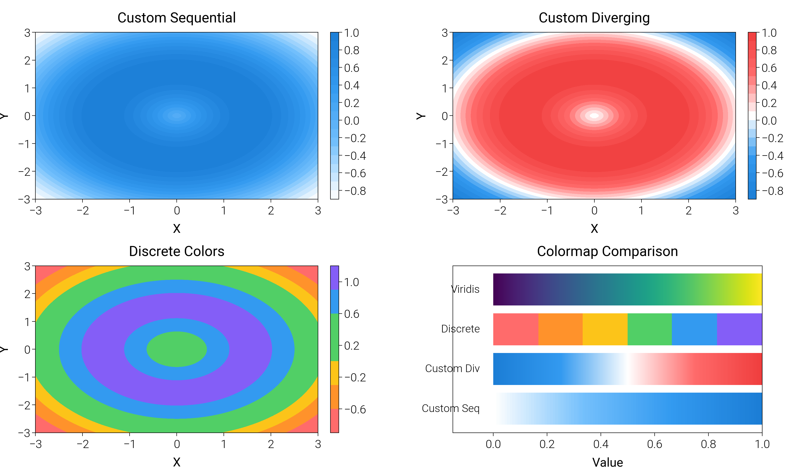

Note
Go to the end to download the full example code.
Custom Colormaps¶
Creating and using custom colormaps for visualization.
import numpy as np
import matplotlib.pyplot as plt
from matplotlib.colors import LinearSegmentedColormap, ListedColormap
import dartwork_mpl as dm
dm.style.use_preset('scientific')
# Generate data
x = y = np.linspace(-3, 3, 100)
X, Y = np.meshgrid(x, y)
Z = np.sin(np.sqrt(X**2 + Y**2))
fig = plt.figure(figsize=(dm.cm2in(17), dm.cm2in(10)), dpi=200)
gs = fig.add_gridspec(nrows=2, ncols=2, left=0.08, right=0.95,
top=0.95, bottom=0.08, wspace=0.35, hspace=0.4)
# Panel A: Custom sequential colormap
ax1 = fig.add_subplot(gs[0, 0])
colors_seq = ['white', 'dm.blue3', 'dm.blue5', 'dm.blue7']
n_bins = 100
cmap_custom = LinearSegmentedColormap.from_list('custom_blue', colors_seq, N=n_bins)
im1 = ax1.contourf(X, Y, Z, levels=20, cmap=cmap_custom)
plt.colorbar(im1, ax=ax1, fraction=0.046, pad=0.04)
ax1.set_xlabel('X', fontsize=dm.fs(0))
ax1.set_ylabel('Y', fontsize=dm.fs(0))
ax1.set_title('Custom Sequential', fontsize=dm.fs(1))
# Panel B: Custom diverging colormap
ax2 = fig.add_subplot(gs[0, 1])
colors_div = ['dm.blue7', 'dm.blue5', 'white', 'dm.red5', 'dm.red7']
cmap_div = LinearSegmentedColormap.from_list('custom_div', colors_div, N=256)
im2 = ax2.contourf(X, Y, Z, levels=20, cmap=cmap_div)
plt.colorbar(im2, ax=ax2, fraction=0.046, pad=0.04)
ax2.set_xlabel('X', fontsize=dm.fs(0))
ax2.set_ylabel('Y', fontsize=dm.fs(0))
ax2.set_title('Custom Diverging', fontsize=dm.fs(1))
# Panel C: Discrete colormap
ax3 = fig.add_subplot(gs[1, 0])
colors_discrete = ['dm.red5', 'dm.orange5', 'dm.yellow5', 'dm.green5', 'dm.blue5', 'dm.violet5']
cmap_discrete = ListedColormap(colors_discrete)
im3 = ax3.contourf(X, Y, Z, levels=6, cmap=cmap_discrete)
plt.colorbar(im3, ax=ax3, fraction=0.046, pad=0.04, ticks=np.linspace(-1, 1, 6))
ax3.set_xlabel('X', fontsize=dm.fs(0))
ax3.set_ylabel('Y', fontsize=dm.fs(0))
ax3.set_title('Discrete Colors', fontsize=dm.fs(1))
# Panel D: Gradient demonstration
ax4 = fig.add_subplot(gs[1, 1])
gradient = np.linspace(0, 1, 256).reshape(1, -1)
# Show multiple gradients
n_gradients = 4
cmaps_demo = [cmap_custom, cmap_div, cmap_discrete, 'viridis']
labels_demo = ['Custom Seq', 'Custom Div', 'Discrete', 'Viridis']
for i, (cmap, label) in enumerate(zip(cmaps_demo, labels_demo)):
ax4.imshow(gradient, aspect='auto', cmap=cmap, extent=[0, 1, i, i+0.8])
ax4.text(-0.05, i+0.4, label, ha='right', va='center', fontsize=dm.fs(-1))
ax4.set_xlim(-0.15, 1)
ax4.set_ylim(-0.2, n_gradients)
ax4.set_xlabel('Value', fontsize=dm.fs(0))
ax4.set_title('Colormap Comparison', fontsize=dm.fs(1))
ax4.set_yticks([])
dm.simple_layout(fig, gs=gs)
plt.show()
Total running time of the script: (0 minutes 0.915 seconds)